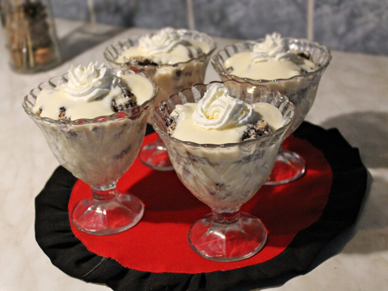

Mákos Guba 15 perc alatt:
Mákosgubakehely krémes vaníliasodóval
Mákosguba:
| Hozzávalók |
Mennyiség |
| Kifli |
4db |
| Tej |
3dl |
| Vaj |
5dkg |
| Cukor |
3 evőskanál |
| Mák |
4 evőskanál |
Vaníliasodó:
| Hozzávalók |
Mennyiség |
| Cukor |
4 evőskanál |
| Tej |
5dl |
| Tojás |
2db |
| Vaj |
5dkg |
| Étkezési keményítő |
2 evőskanál |
| Vaniliás Cukor |
1 csomag |
Vanniliásodó elkészítése:
- A tojássárgáját kb. 1 dl tejjel, a cukorral és a keményítővel elkeverjük. A tejet a vaníliás cukorral felforraljuk, és a tojássárgás masszát beleöntjük. Folytonos keveréssel besűrítjük.
- Mikor levettük a tűzről hozzákeverjük a vajat, és a tojásfehérjehabot, amit felvertünk.
Máskosguba elkészítése:
- A tejet odatesszük forralni a vajjal, és cukorral. Mikor majdnem forr, beleöntjük a darált mákot. Jól elkeverjük. A mák kissé meg fog duzzadni, és nem lesz száraz!!
- A felkarikázott kifliket beletesszük egy nagyobb, szélesebb tálba, végül rászedjük a forró öntetet, úgy, hogy minden kiflire jusson. Jól belenyomkodjuk a kifliket.
- Poharakba szedjük, elosztjuk.
- Az elkészült sodót rászedjük a mákos kifli tetejére.
